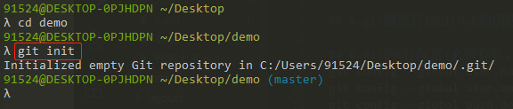
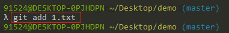
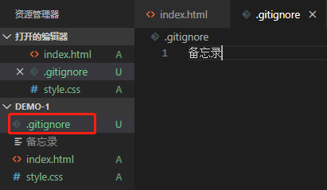
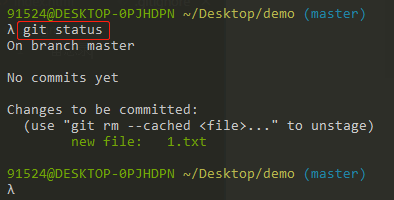
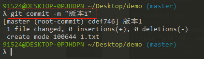
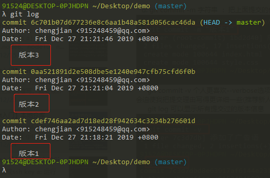
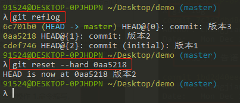
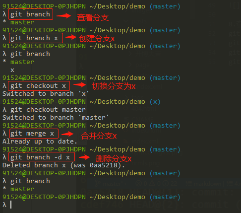
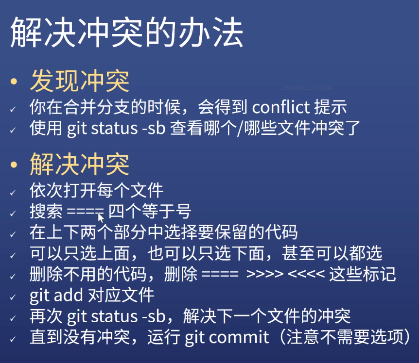

POSTS
3 - [Git入门]本地仓库
A.git就是开启GitHub的钥匙
B.git的6行配置(必须存在，否则git无法使用)
git config –global user.name 你的英文名(yaochengjian)
git config –global user.email 你的邮箱(915248459@qq.com)
git config –global push.default simple
git config –global core.quotepath false
git config –global core.eaitor “code –wait”
git config –global core.autocrlf input
注意：上面的英文名和邮箱跟Github没有关系，可以跟GitHub的用户名和邮箱保持一致，也可以不一致
C.git可以让你的代码有版本(可以随时回退到某个版本，当然git还有其它更强大的功能)
1.git init
会创建.git目录/仓库，用来容纳你的代码快照

2.git add 路径
选择哪些变动是需要提交的，相对路径/绝对路径

3..gitignore
描述哪些变动是不需要提交的

4.git status
通过这个命令可以查看哪些文件需要提交的

5.git commit -m 字符串
把上面提交的代码复制一份到.git目录里面

git commit -v
个人更喜欢–verbose选项，因为它能帮我回顾刚刚改了什么东西，而且会迫使我把提交理由写得更详细一些
6.git log
可以显示所有提交过的版本信息

7.git reflog
可以查看所有分支操作记录以及提交过的版本
git reset –hard 0aa5218(版本号)
版本回退，可以选择之前提交过的版本

8.查看分支 创建分支 切换分支 合并分支 删除分支
git branck 基于当前commit创建一个新的分支，也可以查看分支
git checkout 用户切换分支
git merge master 进入保留分支，运行git merge master
git branch -d x 合并完成后删除无用分支

